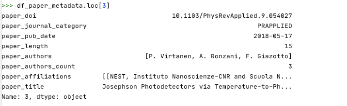
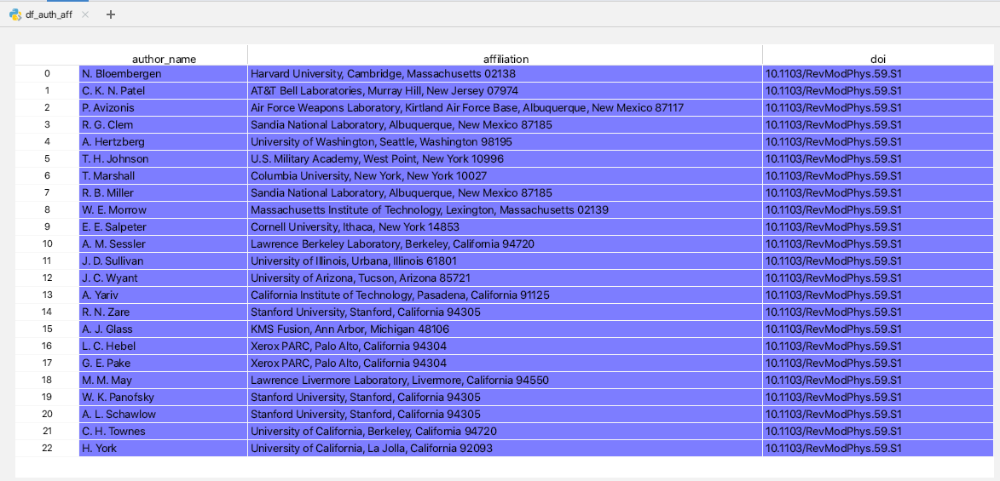

Chapter 3 Data transformation
Data clean up and transformation was the most challenging part of our project, given the complex nature and size of the data set. We provide a summary here. There are additional steps we have performed that we have excluded here for conciseness. We can provide details if required. We have the complete code of our transformation in python and R in our repository.
Transformation in Python:
The bulk of the data cleanup and transformation of our raw metadata was done using Python. The code is in our repository here - https://github.com/superpowergirl/PR_citations/tree/main/datatransformation_python
Below is a brief of how we transform the json metadata into two dataframes in python. We then converted these dataframes into two comma separated values (csv) files and imported them into R for further cleanup and transformation as applicable for our analysis.
- Dataframe 1 - A dataframe with paper_doi as the primary key and relevant columns from the metadata file
Each article has a corresponding json file that has its metadata. We parse through all the json files in python and generate a dataframe with the relevant columns we would need for analysis. We have 656622 such articles, and hence our final dataframe has 656622 rows - one for each article.
As an example, let us look at one row of the dataframe corresponding to one article. Please refer to the Data Sources section for a representation of the metadata json file for a particular article.
 While generating this dataframe, we ensure that we take care of the following - we filter out the ‘author type’ that is not ‘Person’ because there are instances where a survey group organization might be an ‘author’. We match the affiliation Ids of authors to the names corresponding to those Ids and add them in the paper_affiliations column.
- Dataframe 2 - A dataframe with (paper_doi,author_name,author_affiliation) as the composite primary key and relevant columns from Dataframe 1
As we wanted to look closely at how the factors related to authors, such as their affiliation, their number of co-authors, affect the citations their articles receive, we created a long dataframe where each row was an author, affiliation, and doi. In this dataframe, we have as many rows for a particular author as equal to the number of Physical Review Journal articles they have published. One thing we noticed in the raw metadata is that an author can be affiliated to more than one organization/institute. For ease of our analysis, we are only keeping one affiliated organization per author. Also, if we do not have the affiliation information for an author, we are discarding it from this particular dataframe for ease of analysis. The number of rows discarded is small (detail in the Missing Values section).
A sample extract of the final dataframe is shown below. In this sample, we have the all the authors of a specific paper as separate row of the dataframe- 
Clean up and Transformation in R:
The above was an initial transformation that we did in Python.After we ingest the the citation pairs csv (provided as a data set) and the two generated metadata csvs from python above, we do some further clean up to remove any missing values. These 3 dataframes form the basis for performing all our analysis, by combining different columns from them and doing calculations on them to generate more dataframes that were used to create visualizations. We provide the code related to these specific transformations within the results section.